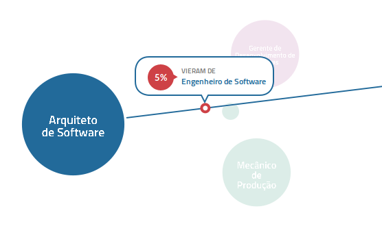
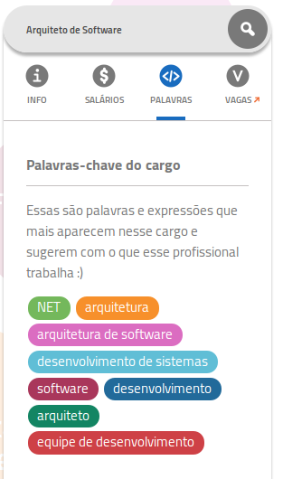

Oi
Me disseram que eu tinha pouco tempo,
então vamos agilizar!
Meu nome é Ronie
Trabalho na VAGAS.com
Nós construímos um sistema ANIMAL!
Processando milhões de dados
Nele, o S.O. é parte do software e não algo embaixo
Os resultados foram muito bons
E talvez essa experiência possa dar ideias
Obrigado!
Ok, isso foi rápido demais >_<
Deixa tentar de novo...
Oi
Meu nome é

Ronie
Sou um tiuzão Nerd!
Mas menos que o Taq

Menos loco tb :p
(se liga na cara do tiuzinho no fundo)
Meu negócio é...
Programar
Work smarter, not harder
RPG, tabuleiros, etc...
e, ultimamente...
Data Science

"Hulk smash... data"
Trabalho na VAGAS.com
Empresa de RH
TECNOLOGIA
#NOBOSS
Não temos chefes
"Radicalmente Horizontal"
Raul Seixas & Papai Noel :p
Sidney Monreal & Mário Kaphan ^_^

Fundadores e ótimos amigos!
Nós construímos um sistema ANIMAL!
vagas.com/mapa-de-carreiras
Retrato do Mercado de Trabalho
Quem vai para onde
Quanto ganha

O que faz
Usando..
O que as pessoas dizem...
e não o opinião de algum especialista ^_^
(isso causa efeitos interessantes...)
O causo do "Diretor de Marketing"
Por que ganham menos que "Gerente de Marketing"
Processando milhões de dados
Bilhões
Milhões
10.000.000 de currículos
Uruguai x 3
148.000
Auxiliares Administrativos
+80 eventos/seg
Metrô da Sé: 7,18 passageiros/seg

Isso é Big Data?
Talvez não, mas não importa...
É mais do que cabe na memória da minha máquina >_<
É mais do que minha paciência aguenta esperar :p
So... bring the
BIG GUNS!!!

Hadoop, Storm, Spark, ...
Ou não :p
E se tentássemos algo mais...
...simples?
O que precisamos,
na real?
- Uma tática para usar pouca memória (Streams)
- Escalonamento (Comunicação interprocessos)
- Poder usar ferramentas prontas (R, Python, ?)
- Trocar partes facilmente (Componentes)
REALLY BIG
GUNS!!!
...
"Nele, o S.O. é parte do software e não algo embaixo"
E se...
usássemos apenas
o Sistema Operacional?
Processos, Pipes, Sockets
*Diagrama
Reiventando a roda, hein?
Mas... mas...
Isso tudo já estava aí BEM antes :p
Whatever...
e os resultados?
Os resultados foram muito bons
Memória?
Ruby 2.0: Copy-on-Write Memory on Fork
Varia de acordo com o tamanho da mensagem
Maior nos acumuladores (como cálculo de TF-IDF)
No geral, muito baixa ^_^
Escalonamento?
Cada componente:
...roda no seu próprio tempo
...pode habitar outras máquinas
Raras as situações de deadlock
(peguei só uma até agora)
Bem simples
Ferramentas prontas?
Dá para usar qualquer coisa que leia e grave em arquivos
Qualquer linguagem
Qualquer comando linux
Qualquer programa (MCL, por exemplo)
O que for necessário \o/
Trocar partes facilmente?
Qualquer componente pode ser substituído
Qualquer "subpipeline" pode ser substituída
Tranquilo evoluir e experimentar
Bonus track
Muito fácil testar cada componente
Fácil processar "por partes"
Nem tudo
são flores =/
Sobram zumbis em alguns crashs (my bad)
Difícil testar o "montador de pipelines"
"Freezes" são um porre >_<
E talvez essa experiência possa dar ideias
Três fontes
Flow Based Programming

The Unix Philosophy
ØMQ Philosophy
Nós criamos sistemas complexos demais
>_<
Obrigado!
Ronie Uliana
@ronie | +RonieUliana
ronie.uliana@vagas.com.br